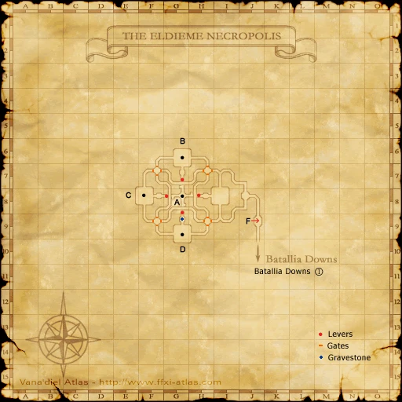
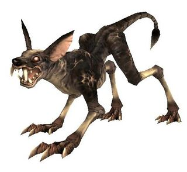
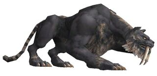
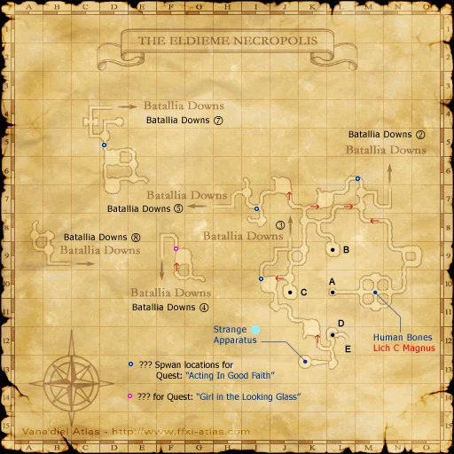

Description
The Eldieme Necropolis is a dungeon in Norvallen.
Map

Involved in Quests / Missions
| Quest / Mission | Type | Starter | Location |
|---|---|---|---|
| A New Dawn | AF (BST) | Dietmund | Lower Jeuno (pos=G-11) |
| Acting in Good Faith | Scroll | Gantineux | Windurst Waters (pos=E-10) |
| Blue Ribbon Blues | General | Kerutoto | Windurst Waters (pos=J-9) |
| Borghertz's Sorcerous Hands | AF (BLM Legs) | Guslam | Upper Jeuno (pos=H-8) |
| Borghertz's Shadowy Hands | AF (DRK) | Guslam | Upper Jeuno (pos=H-8) |
| Borghertz's Stalwart Hands | AF (PLD) | Guslam | Upper Jeuno (pos=H-8) |
| Borghertz's Vermillion Hands | AF (RDM) | Guslam | Upper Jeuno (pos=H-8) |
| Borghertz's Warring Hands | AF (WAR) | Guslam | Upper Jeuno (pos=H-8) |
| Catch It If You Can! | General | Ohruru | Port Windurst (pos=E-7) |
| Escort for Hire (San d'Oria) | General | Rondipur | Northern San d'Oria (pos=F-6) |
| Fire and Brimstone | AF (RNG) | Perih Vashai | Windurst Woods (pos=K-7) |
| In Defiant Challenge | Genkai | Maat | Ru'Lude Gardens (pos=H-5) |
| Pieuje's Decision | AF (WHM) | --- | Chateau d'Oraguille (pos=H-8) |
| Save My Sister | General | Baudin | Upper Jeuno (pos=G-8) |
| Strange Apparatus | --- | --- | --- |
| The Requiem | AF (BRD) | Bki Tbujhja | Lower Jeuno (pos=H-8) |
NPCs
| Name | Location | Type |
|---|---|---|
| Cannau | — | Escort NPC |
Notorious Monsters
| Name | Level | Drops | Steal | Family | Spawns | Notes |
|---|---|---|---|---|---|---|
| Cwn Cyrff | 68 | Swan Bilbo | — |  HoundsImage source | — | A, H, HP |
| Skull of Envy | 60 | Envy Spear Jadeite | — |  SkeletonsImage source SkeletonsImage source | — | A, H, HP |
| Skull of Gluttony | 60 | Chrysoberyl Gluttony Sword | — | SkeletonsImage source | — | A, H, HP |
| Skull of Greed | 60 | Fluorite Greed Scimitar | — | SkeletonsImage source | — | A, H, HP |
| Skull of Lust | 60 | Lust Dagger Painite | — | SkeletonsImage source | — | A, H, HP |
| Skull of Pride | 60 | Aquamarine Pride Staff | — | SkeletonsImage source | — | A, H, HP |
| Skull of Sloth | 60 | Sloth Wand Zircon | — | SkeletonsImage source | — | A, H, HP |
| Skull of Wrath | 60 | Sunstone Wrath Tabar | — | SkeletonsImage source | — | A, H, HP |
Regular Monsters


Event Monsters
| Name | Level | Drops | Steal | Family | Spawns | Notes |
|---|---|---|---|---|---|---|
| Dog Guardian | 52 | — | — | SkeletonsImage source | 1 | Spawned Quest: The Requiem; A, L, H, HP |
| Lich C Magnus | 58 | Bone Chip Lilith's Rod | — | SkeletonsImage source | 1 | Spawned Quest: Blue Ribbon Blues; A, H, HP |
 MimicImage source MimicImage source | — | Eldieme Coffer Key | — | Mimics | 1 | Failed coffer pick; A, H, M |
| Namorodo | — | — | — | SkeletonsImage source | 1 | Spawned Quest: Girl in the Looking Glass; A, H, HP |
| Owl Guardian | 52 | — | — | SkeletonsImage source | 1 | Spawned Quest: The Requiem; A, L, H, HP |
| Sturm | 62 | — | — | HoundsImage source | 1 | Spawned Quest: A New Dawn; A, L, H, HP |
| Taifun | 58 | — | — |  TigersImage source | 1 | Spawned Quest: A New Dawn; A, L |
| Trombe | 58 | — | — | TigersImage source | 1 | Spawned Quest: A New Dawn; A, L |
| Yum Kimil | 54 | — | — | SkeletonsImage source | 1 | Spawned Quest: The Requiem; A, L, H, HP |

Maps

References
External references describe their own server or retail rules. Documented Zenith changes take precedence.
Map credits: Map 1 — HorizonXI Wiki · Map 2 — HorizonXI Wiki · Map 3 — HorizonXI Wiki. Original game maps © SQUARE ENIX; redrawn maps retain the credited authorship and license.


Additional level-75 reference
|
The ancient Elvaan built these burial mounds, also known as the Coveffe Barrows, in an attempt to bring themselves closer to the Goddess Altana in death. Within the San d'Orian Church, to spend one's final days on Vana'diel within these tombs was often considered the greatest blessing before departing to the afterlife. This resulted in a wave of followers traveling to the barrows and constructing the underground necropolis that remains there to this day. However, during the Great War, these catacombs were also the sites of fierce battles that left thousands dead or injured. The spirits of these lost souls still roam the tombs below. |


Connecting Areas
- Batallia Downs
- Escapes to: Batallia Downs (G-8)
Involved in Quests/Missions
|
Quest |
Type |
Starter |
Location |
| A New Dawn | AF (BST) | Dietmund | Lower Jeuno (G-11) |
| Acting in Good Faith | Scroll | Gantineux | Windurst Waters (E-10) |
| Blue Ribbon Blues | General | Kerutoto | Windurst Waters (J-9) |
| Borghertz's Shadowy Hands | AF (DRK) | Guslam | Upper Jeuno (H-8) |
| Borghertz's Stalwart Hands | AF (PLD) | Guslam | Upper Jeuno (H-8) |
| Borghertz's Vermillion Hands | AF (RDM) | Guslam | Upper Jeuno (H-8) |
| Borghertz's Warring Hands | AF (WAR) | Guslam | Upper Jeuno (H-8) |
| Catch It If You Can! | General | Ohruru | Port Windurst (E-7) |
| Escort for Hire (San d'Oria) | General | Rondipur | Northern San d'Oria (F-6) |
| Fire and Brimstone | AF (RNG) | Perih Vashai | Windurst Woods (K-7) |
| Girl in the Looking Glass | NPC | Luto Mewrilah | Upper Jeuno (G-8) |
| In Defiant Challenge | Genkai | Maat | Ru'Lude Gardens (H-5) |
| Pieuje's Decision | AF (WHM) | Door | Chateau d'Oraguille (H-8) |
| Save My Sister | General | Baudin | Upper Jeuno (G-8) |
| Strange Apparatus | -- | -- | -- |
| The Requiem | AF (BRD) | Bki Tbujhja | Lower Jeuno (H-8) |
Coffer/Chest Contents
|
NPCs Found Here
Weather
| ||||||||||||||||||||
Notorious Monsters Found Here
|
Name |
Level |
Drops |
Steal |
Family |
Spawns |
Notes | |||||||
| Cwn Cyrff | 68 - 68 | Swan Bilbo | Hound | ||||||||||
| Dog Guardian | 52 - 52 | Skeleton | |||||||||||
| Lich C Magnus | 58 - 58 | Bone Chip | Skeleton | ||||||||||
| Mimic | Unknown | Mimic | |||||||||||
| Namorodo | Unknown | Skeleton | |||||||||||
| Owl Guardian | 52 - 52 | Skeleton | |||||||||||
| Skull of Envy | 60 - 60 | Envy Spear | Skeleton | ||||||||||
| Skull of Gluttony | 60 - 60 | Chrysoberyl | Skeleton | ||||||||||
| Skull of Greed | 60 - 60 | Fluorite | Skeleton | ||||||||||
| Skull of Lust | 60 - 60 | Lust Dagger | Skeleton | ||||||||||
| Skull of Pride | 60 - 60 | Aquamarine | Skeleton | ||||||||||
| Skull of Sloth | 60 - 60 | Sloth Wand | Skeleton | ||||||||||
| Skull of Wrath | 60 - 60 | Sunstone | Skeleton | ||||||||||
| Sturm | 62 - 62 | Hound | |||||||||||
| Taifun | 58 - 58 | Tiger | |||||||||||
| Trombe | 58 - 58 | Tiger | |||||||||||
| Yum Kimil | 54 - 54 | Skeleton | |||||||||||
|
HP = Detects Low HP; M = Detects Magic; Sc = Follows by Scent; T(S) = True-sight; T(H) = True-hearing JA = Detects job abilities; WS = Detects weaponskills; Z(D) = Asleep in Daytime; Z(N) = Asleep at Nighttime | |||||||||||||
Mobs Found Here
|
Name |
Level |
Drops |
Steal |
Family |
Spawns |
Notes | |||||||
| Anemone | 45 - 46 | Morbol | A, H | ||||||||||
| Azer | 51 - 53 | Bomb | A, S, M | ||||||||||
| Blood Soul | 50 - 52 | Ghost | A, H, HP | ||||||||||
| Dark Stalker | 57 - 59 |
|
Shadow | A, L, H, HP | |||||||||
| Earth Elemental | 52 - 55 | Elemental | |||||||||||
| Fallen Knight | 54 - 56 | Skeleton | |||||||||||
| Gazer | 41 - 43 | Hecteyes | A,H | ||||||||||
| Haunt | 63 - 65 | Ghost | |||||||||||
| Hell Hound | 46 - 49 | Hound | |||||||||||
| Ice Elemental | 52 - 55 | Elemental | |||||||||||
| Ka | 52 - 54 |
|
Shadow | ||||||||||
| Lich | 51 - 55 | Skeleton | |||||||||||
| Lost Soul | 42 - 46 | Skeleton | |||||||||||
| Marchosias | 40 - 43 | Hound | |||||||||||
| Mummy | 50 - 52 | Skeleton | |||||||||||
| Puroboros | 42 - 44 | Bomb | |||||||||||
| Revenant | 44 - 47 | Ghost | |||||||||||
| Shade | 46 - 48 |
|
Shadow | ||||||||||
| Spriggan | 64 - 66 | Shadow | |||||||||||
| Tomb Mage | 60 - 63 | Skeleton | |||||||||||
| Tomb Warrior | 60 - 62 | Skeleton | |||||||||||
| Tomb Wolf | 53 - 55 | Hound | |||||||||||
| Utukku | 55 - 57 | Ghost | |||||||||||
|
HP = Detects Low HP; M = Detects Magic; Sc = Follows by Scent; T(S) = True-sight; T(H) = True-hearing JA = Detects job abilities; WS = Detects weaponskills; Z(D) = Asleep in Daytime; Z(N) = Asleep at Nighttime | |||||||||||||
Adapted from Eden Wiki: The Eldieme Necropolis · Contributors and history · CC BY-SA 4.0. Revision 45530. Layout, links and optional background text adapted for Zenith.